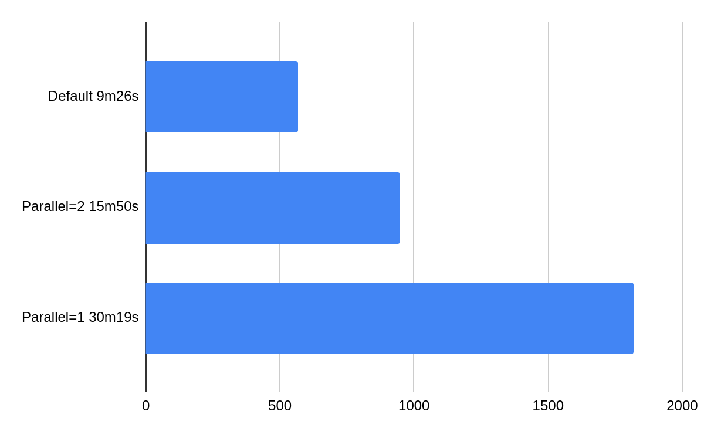

Caution
You are not reading the latest stable version of this documentation. If you want up-to-date information, please have a look at 2.6.
Repair is important to make sure that data across the nodes is consistent. To learn more about repairs please consult this Scylla University lesson.
Scylla Manager automates the repair process and allows you to configure how and when repair occurs. When you create a cluster a repair task is automatically scheduled. This task is set to occur each week by default, but you can change it to another time, change its parameters or add additional repair tasks if needed.
Glob patterns to select keyspaces or tables to repair
Parallel repairs
Control over repair intensity and parallelism even for ongoing repairs
Resilience to schema changes
Retries
Pause and resume
Scylla Manager can repair distinct replica sets in a token ring in parallel. This is beneficial for big clusters. For example, a 9 node cluster and a keyspace with replication factor 3, can be repaired up to 3 times faster in parallel. The following diagram presents a benchmark results comparing different parallel flag values. In a benchmark we ran 9 Scylla 2020.1 nodes on AWS i3.2xlarge machines under 50% load, for details check this blog post
By default Scylla Manager runs repairs with full parallelism, you can change that using sctool repair –parallel flag.
Intensity specifies how many token ranges per shard can be repaired in a Scylla node at every given time. It can be a decimal between (0,1). In that case the number of token ranges is a fraction of number of shards. The default intensity is one, you can change that using sctool repair –intensity flag.
Scylla Manager 2.2 adds support for intensity value zero.
In that case the number of token ranges is calculated based on node memory and adjusted to the Scylla maximal number of ranges that can be repaired in parallel (see max_repair_ranges_in_parallel in Scylla logs).
If you want to repair faster, try using intensity zero.
Note that the less the cluster is loaded the more it makes sense to increase intensity. If you increase intensity on a loaded cluster it may not give speed benefits since cluster have no resources to process more repairs. In our experiments in a 50% loaded cluster increasing intensity from 1 to 2 gives about 10-20% boost and increasing it further will have little impact.
Repair speed is controlled by two parameters: --parallel and --intensity
Those parameters can be set when you:
Schedule a repair with sctool repair
Update a repair specification with sctool repair update
Update a running repair task with sctool repair control
More on the topic of repair speed can be found in Repair faster and Repair slower articles.
{kind=link}